Марк Сінклер Вінсент(англ. Mark Sinclair Vincent), відомий під сценічним ім'я Він Ді́зель (англ. Vin Diesel; нар. 18 липня 1967) — американський актор, сценарист, кінорежисер і продюсер. Засновник продюсерської компанії One Race Productions, а також знімальної студії Tigon Studios.
За підсумками 2019 року перебуває на 6-му місці рейтингу Forbes серед найбільш високооплачуваних акторів; його заробіток склав $54 млн (40-е місце в загальному рейтингу знаменитостей).
Народився 18 липня 1967 р. у Каліфорнії, в Аламеді. Батька Він Дізель не знав і виховувався матір'ю Делорою, яка була звичайним психіатром. З появою вітчима і двох молодших дітей грошей більше не стало, зате стало цікавіше жити. Вітчим Віна Дізеля – викладач акторської майстерності в університеті Нью-Йорка – прищеплював дітям інтерес до мистецтва, заохочуючи їх походи в театр і в кіно. Можливо, вплив вітчима і позначилося на формуванні характеру і прагнень Віна Дизеля.
Коли Віну було 7 років, його помітила режисер місцевого театру і запропонувала хлопчикові виступати на сцені. З цієї миті Віну довелося ходити на репетиції щодня після школи. Незабаром відбулася прем'єра першого спектаклю за участю Віна Дізеля — "Двері для динозавра". Його виступ був настільки вдалим, що саме з цієї миті він почав мріяти про кар'єру актора. Аж до 17 років він виступав на сцені театру, удосконалюючи свою майстерність. Багато в чому цьому посприяв і його вітчим.
Походивши в спортзал і наростивши купу м'язів, з інтелігентного Марка Вінсента він перетворився на брутального Віна Дізеля – вишибалу злачного нічного клубу "Тунель". Працюючи вишибалою, Він Дізель поступає в Хантер-коледж, де старанно вивчає англійську класичну літературу і письменницьку майстерність, щоб потім писати сценарії для себе. Проте через три роки, коли робота в "Тунелі" неабияк набридла, Він кидає коледж і їде підкорювати Лос-Анджелес, мріючи стати зіркою кіно.
 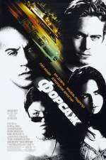
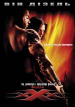
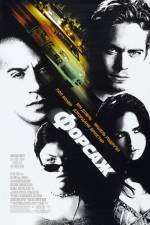
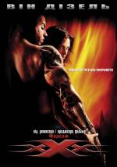
 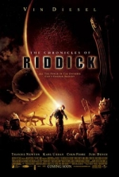
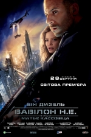
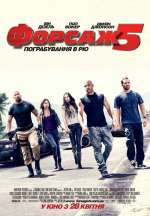
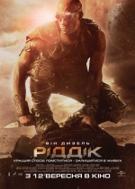
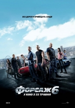
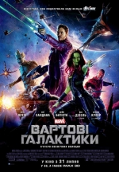
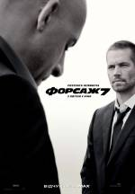
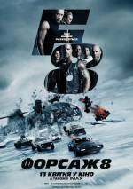
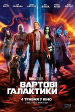
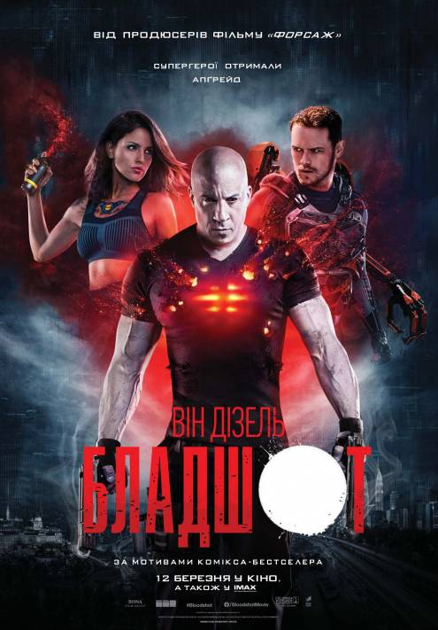
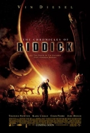
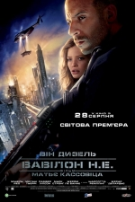
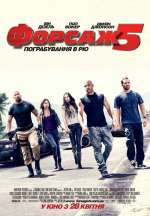
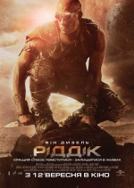
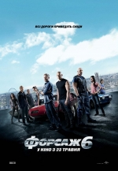
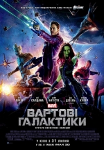
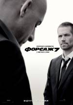
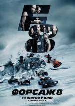
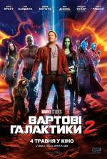
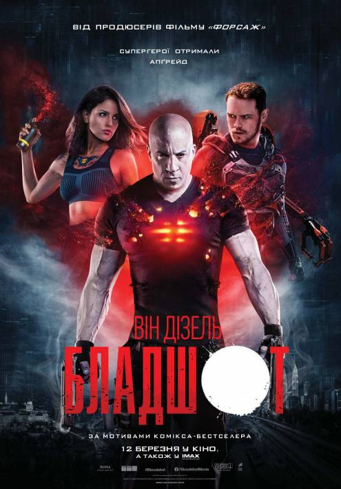
Головний герой — поліцейський під прикриттям Брайан О'Коннер (Пол Вокер). Його мета — бути прийнятим в автобанду легендарного вуличного гонщика Домініка Торетто (Він Дізель), якого підозрюють у нападах на вантажівки з побутовою технікою.
Фільм збирає разом головних героїв першого фільму: поліцейського Брайана (Пол Вокер) і сім'ю Домініка Торетто (Він Дізель) — сестру Мію (Джордана Брюстер) і його дівчину Летті (Мішель Родрігес ). Цього разу Домініку і Брайану доведеться попрацювати разом — їм належить влитися в довіру до відомого наркобарона на ім'я Артуро Брага (Джон Ортіс). У кожного з героїв свій резон, щоб покарати лиходія.
Брайан О'Коннер (Пол Вокер), тепер вже не поліцейський, і Домінік Торетто (Він Дізель) занадто сильно захопилися життям поза законом. Після того, як Брайан і Міа Торетто (Джордана Брюстер) звільнили Домініка, вони не ризикують довго затримуватися на одному місці, тому що є бажаною здобиччю для незадоволених копів. Їхньою метою стає Ріо-де-Жанейро, де їх зустрічає старий знайомий — друг дитинства Домініка Вінс (Метт Шульц). Команда мимоволі переходить дорогу місцевому кримінальному авторитету Ернану Рейсу (Жоакім ді Алмейда), який тримає під контролем все місто. В той же час, за головними героями починають полювання можновладці на чолі з Люком Гоббсом (Двейн Джонсон) — елітним спецагентом-професіоналом.
Агент Люк Гоббс (Двейн Джонсон) намагається зловити команду смертельно небезпечних найманців-водіїв, які орудують в Лондоні. Один з членів цієї організації — Летті Ортіс (Мішель Родрігес), колишня кохана Домініка (Він Дізель), яку вважали загиблою. Гоббс змушений звернутися за допомогою до Торетто і його людям, єдина мета яких — повернути Летті в «сім'ю».
Убивши Хана (Сон Кан), Деккард Шоу (Джейсон Стейтем) мріє покарати всю команду, винну у загибелі його брата Оуена, якого Домінік і Гоббс знищили в попередній частині.
Домінік Торетто (Він Дізель) та Летті (Мішель Родрігес) відправляються на медовий місяць, в той час як Міа і Брайан виходять з гри. Інші члени команди реабілітовані і ведуть цілком нормальне життя. Але коли таємнича жінка втягує Домініка в світ злочинності, з якого він не може бігти, змушуючи зрадити всіх тих, хто йому доріг, команда зіткнеться з випробуваннями, які перевірять кожного, як ніколи раніше.
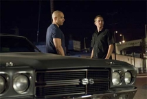 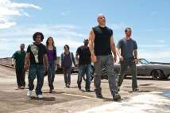 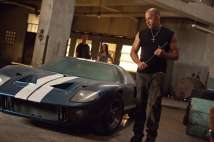 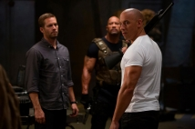 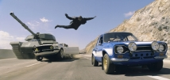В недалекому майбутньому космічний корабель зазнає аварії, в результаті чого здійснює вимушену посадку на віддаленій планеті. Що залишилися в живих виявляються одні на страшній і мертвій планеті. Планета має три сонця, але як тільки планета занурюється в темряву, з'являються якісь дивні істоти
Ріддік провів останні п'ять років серед забутих світів на задворках галактики, ховаючись від найманців, що призначили ціну за його голову. Тепер утікач виявився на планеті Геліон, де живе прогресивне багатонаціональне суспільство, завойоване лордом Маршалом, фанатиком, що вирішив поневолити людство армадою своїх воїнів, некромонгерів. Зробивши втечу з підземної в'язниці, де температура коливалася від арктичних ночей до вулканічних днів, Ріддік зустрічає Кайру, останню живу жінку з раннього періоду його життя. Його спроби звільнити себе і Кайру приводять їх на борт головного корабля некромонгерів, де він має зштовхнутися з лордом Маршалом в апокаліптичній битві не на життя, а на смерть.
"Ріддік" — остання частина революційної саги, яка почалася з хіта 2000-х "Чорна Діра" та "Хроніки Ріддіка", що вийшли в 2004 році — об'єднує в одну команду легендарну кінозірку Віна Дізеля та режисера Девіда Туї. Дізель знову повертається в ролі антигероя Ріддіка, небезпечного втеклого в'язня, найбажанішої здобичі всіх мисливців за головами в Галактиці. Ріддік був ганебно залишений помирати на безлюдній планеті під пекучими променями сонця. Він бився з хижаками за життя і став сильнішим і небезпечнішим за себе колишнього. Галактичні найманці, що почали на нього полювання, виявляються пішаками в грандіозному плані помсти. З ворогами, які з'являються на його шляху тоді, коли це потрібно самому Ріддіку, він починає похід в ім'я помсти, щоб повернутися на рідну Фурію та врятувати її від знищення. Але хоча часу й замало, й ось-ось почнеться космічна буря, опинившись в якій нікому не вижити, мисливці нізащо не залишать планету, не захопивши з собою голову Ріддіка в якості трофея.
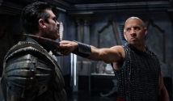 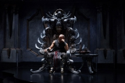Доктор Малкольм Сейєр, сором’язливий лікар і вчений-дослідник, на свій страх і ризик вирішує спробувати новий, експериментальний препарат, який ще не пройшов відповідних досліджень, для лікування хворих, що знаходяться у коматозному стані. І стається диво: пацієнт прокидається після тридцятирічного сну, щоб вперше поглянути на світ. Лікар і пацієнт стають друзями. Завдяки цій дружбі доктор Сейєр стає сміливішою, більш відкритою людиною, а Леонард, його пацієнт, пізнає прості радості життя. Натхнений таким чудесним одужанням свого пацієнта, лікар дає цей препарат і іншим хворим… Фільм повністю базується на реальних подіях, які відбулися у 1969-1970 р. з невропатологом Олівером Саксом, який згодом написав про це мемуари.
Капітан Джон Міллер отримує важке завдання. Разом із загоном з восьми чоловік Міллер повинен відправитися в тил ворога на пошуки рядового Джеймса Райана, три рідних брати якого, майже одночасно загинули на полях битв. Командування прийняло рішення демобілізувати Райана і відправити його на батьківщину до безутішної матері. Але для того, щоб знайти і врятувати солдата, крихітному загону доведеться пройти через всі кола пекла.
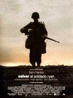Шейн Вулф (Він Дізель) - і боєць елітного підрозділу морської піхоти, що славиться суворим кодексом і найтвердішими тренуваннями. Хлопець із честю проходив через всі випробування й думав, що впорається із чим завгодно, поки не став... нянькою. Коли Шейну доручили захищати п'ятьох дітей ученого, що працює над секретним проектом уряду, бравий піхотинець зіштовхнувся з необхідністю поєднувати дві зовсім різні роботи: битися з «поганими хлопцями» і доглядати за дітьми. Змінивши свій звичайний арсенал зброї на пелюшки й пакетики дитячого харчування, відтепер Шейн повинен боротися не тільки з ворогами, але й з п'ятьома норовливими дияволенятами
Мова у фільмі йде про генетичні маніпуляції з людським організмом. Головний герой - найманець Тороп, найнятий для супроводу молодої жінки з Росії в Канаду. Однак, він не здогадується, що у клієнтці сидить вірус, який становить величезну небезпеку.